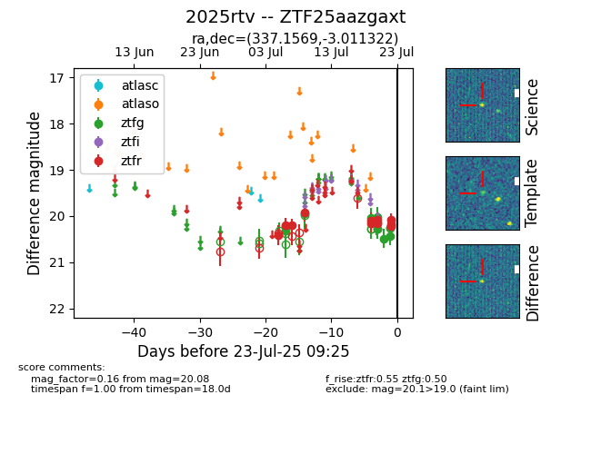

Target ZTF25aazgaxt at 2025-07-23 12:37, see:
FINK: fink-portal.org/ZTF25aazgaxt
Lasair: lasair-ztf.lsst.ac.uk/objects/ZTF25aazgaxt
ALeRCE: alerce.online/object/ZTF25aazgaxt
TNS: wis-tns.org/object/2025rtv
YSE: ziggy.ucolick.org/yse/transient_detail/2025rtv
alt names
ZTF25aazgaxt (ztf,fink)
2025rtv (tns,yse)
coordinates:
equatorial (ra, dec) = (337.1569,-3.01132)
galactic (l, b) = (61.9307,-48.21732)
photometry
last ztfg=20.26, ztfr=20.08
9 ztfg, 12 ztfr detections
